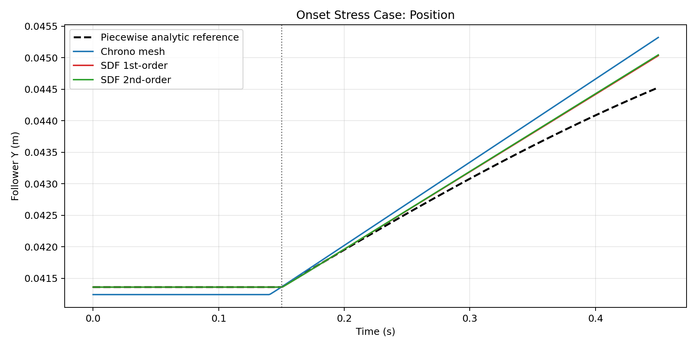
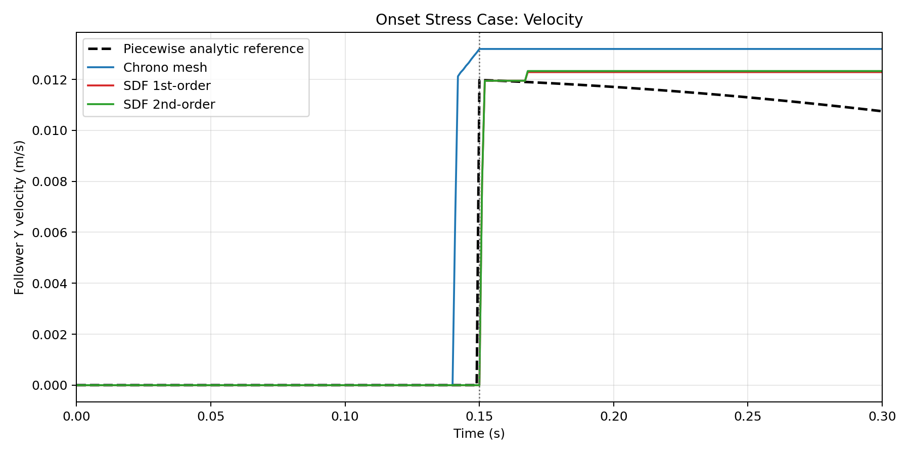

This version-A benchmark keeps a smooth eccentric disk / roller geometry but starts from a positive initial clearance. The follower remains at constant height before first contact, then enters unilateral contact and continues sliding while the cam envelope rises. It is intended to isolate manifold onset behavior before introducing a spring-preloaded version B.
Cam radius: 0.030 m
Eccentricity: 0.006 m
Roller radius: 0.010 m
Motor speed: -2.000 rad/s
Step size: 0.0010 s
Total time: 0.450 s
Gravity: 0.00 m/s²
Configured onset target: 0.150 s
Piecewise reference onset: 0.15 s
| Method | Runtime (s) | Pos RMSE (m) | Vel RMSE (m/s) | Vel Max Abs (m/s) | Detected motion onset (s) |
|---|---|---|---|---|---|
| Chrono NSC native mesh | 65.408 | 0.000319 | 0.002888 | 0.013053 | 0.0 |
| SDF 1st-order | 3.872 | 0.000176 | 0.001767 | 0.011978 | 0.151 |
| SDF 2nd-order | 4.094 | 0.000182 | 0.001796 | 0.011978 | 0.151 |

